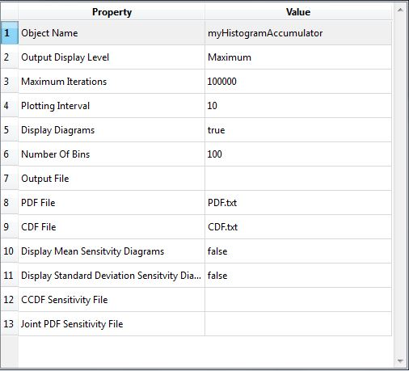

Histogram Accumulator
Class Name
Location in Objects Pane
- Methods > Accumulator > Histogram
Properties

Object Name
- Name of the object in Rt
- Allowable characters are upper-case and lower-case letters, numbers, and underscore (“_”).
- The name is unique and case-sensitive.
Output Display Level
- Determines the level of messages and outputs of this object to print in the Output Pane.
- The higher the level of outputs, the more time it takes to run the analysis.
Maximum Iterations
- Maximum number of samples
- The analysis will finish when the number of created samples reaches this threshold.
Plotting Interval
- Determines the frequency at which the output is plotted.
Display Diagrams
- Determines whether the output is allowed to plot a diagram.
Number Of Bins
- Determines the number of bins to plot relative frequency diagram.
Output File
- Determines the text file in which the results of sampling have been saved.
PDF File
- Determines the text file in which the PDF of samples has been saved.
CDF File
- Determines the text file in which the CDF of samples has been saved.
Output
- This object collects the outputs, calculates the probability of failure, plots the cumulative frequency diagram and decides whether the sampling continues.
Right-click Menu
Remove